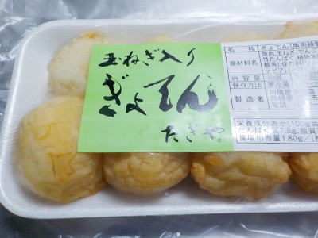

いいものを探そう ～出雲らへん～
島根県出雲市大社町宇龍48
2022/03/21
たぎやのぎょてん

玉ねぎが入った小さな天ぷらです。食べてると玉ねぎに当って、シャリシャリ感がありました。
塩分少なめなので玉ねぎの甘みがよくわかりました。美味しかったです。
【田儀屋蒲鉾店TOP】
【地域TOP】
【HPTOP】
【『日御碕らへん』の他の情報はこちら】
【おいしいものを食べよう。】【たくさん寝よう。】
【ソロ活をしよう!】【季節感のあることをしよう。】【動画視聴はほどほどに。】【当サイトの全てのコンテンツは無断転載禁止です。】